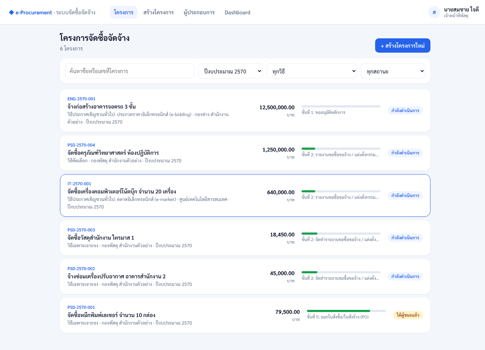
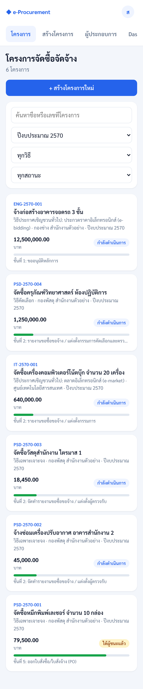

◆ e-Procurement
ระบบบริหารจัดการและสร้างเอกสารจัดซื้อจัดจ้างภาครัฐ
รองรับวิธีประกาศเชิญชวนทั่วไป (e-market / e-bidding) วิธีคัดเลือก และวิธีเฉพาะเจาะจง ตาม พ.ร.บ.การจัดซื้อจัดจ้างฯ พ.ศ. 2560 สร้างเอกสารจากแบบฟอร์มกรมบัญชีกลาง ใช้งานได้ทั้งบนคอมพิวเตอร์และมือถือ
ทดลองใช้งานระบบ →
ใช้งานได้ทันทีในเบราว์เซอร์ เลือกได้ 4 บทบาท ใช้ข้อมูลตัวอย่าง และข้อมูลที่บันทึกจะเก็บไว้ในเบราว์เซอร์ของคุณ
หน้าหลักของระบบ


ภาพจากระบบจริง (FastAPI + PostgreSQL) ด้วยข้อมูลตัวอย่าง ชื่อบุคคลเป็นชื่อสมมติ · หน้าเข้าสู่ระบบ: คอมพิวเตอร์ · มือถือ


ความสามารถหลัก
- ขั้นตอนงานเปลี่ยนตามวิธีจัดหาและวงเงิน
- ตรวจเพดานวงเงินตามมาตรา 56 และการแบ่งซื้อแบ่งจ้าง
- ตรวจ checksum เลขประจำตัวผู้เสียภาษี 13 หลัก และบัญชีผู้ทิ้งงาน
- ผู้เสนอและผู้อนุมัติต้องเป็นคนละคน
- สร้างเอกสาร Word / PDF / Excel ตามแบบฟอร์มกรมบัญชีกลาง
- แจ้งเตือนผ่าน LINE
- Dashboard สรุปผลการจัดซื้อจัดจ้างรายปีงบประมาณ
- สำรองและกู้คืนข้อมูลจากหน้าเว็บ (เข้ารหัส)
- Audit log แก้ไขย้อนหลังไม่ได้
- ติดตั้งเป็นแอปบน iOS / Android